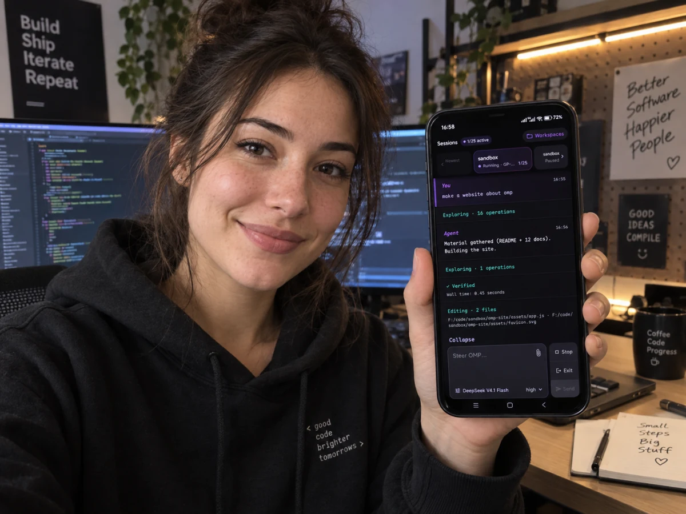
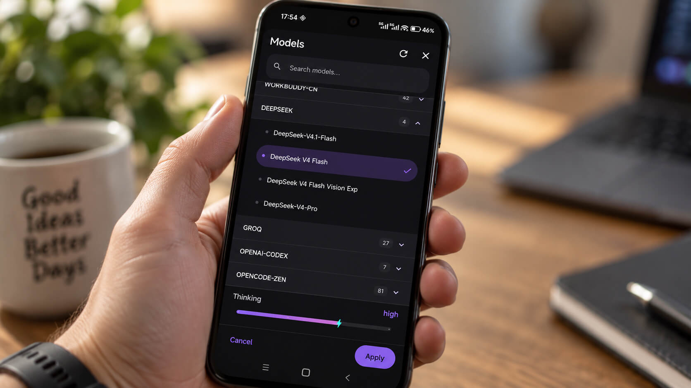

Android app
Start, follow, answer
OPEN SOURCE AI TOOL
Continue sessions from your computer or start new ones remotely. Swipe to switch between sessions smoothly and quickly.

IN YOUR HAND
Your sessions keep running on your host. Follow their progress, answer a question, or steer the next step from your phone.
Get PinkCollabWHY A SEPARATE APP
/collab.Both give a second screen on OMP. They solve different halves of the problem.
OMP’s /collab guests cannot change the model. PinkCollab puts that choice on your phone, with supported thinking levels alongside it.

/collab shares a session that is already running on a terminal you opened. PinkCollab creates the session itself and starts OMP in that directory, so a new task can begin without a keyboard in front of the host.
A Collab room follows one process and ends when it does. PinkCollab keeps the session in your list after OMP exits, reloads its transcript, and starts a new runtime on the same conversation later.
A /collab guest cannot upload a file. Attach files from your phone with PinkCollab to give OMP the context for the next step.
/collab reaches guests through OMP's hosted relay, and its production relay is not distributed for self-hosting. PinkCollab talks only to the Gateway you run: Tailscale Funnel, private Serve, or your own HTTPS proxy.
A /collab link opens one session. PinkCollab keeps every session in one pager: swipe to read the next one and steer it, while the others keep running.
PinkCollab does not mirror the TUI, and OMP stays in control of tools, files, and credentials. Use /collab when you want a colleague inside your terminal session; use PinkCollab to run your own sessions from your phone.
LET’S GET YOU CONNECTED
Download the Android release APK, install the Gateway on the computer that will run sessions, and install and configure Oh My Pi (OMP) separately on that host. Run guided setup, scan the QR code, and close the terminal. The Gateway runs in the background.
omp --version working in your terminal.brew install tailscale, followed by sudo brew services start tailscale and tailscale up; complete sign-in and verify with tailscale status. Existing Tailscale.app users can keep using it. Your account must allow Funnel; the phone does not need Tailscale for this setup.npm install -g pinkcollab@latest
cd ~/projects
pinkcollab setupInstalls the released native Gateway binary without Rust. Prefer a direct download? Choose your platform’s Gateway binary and verify it against SHA256SUMS on the latest release.
git clone https://github.com/3xian/PinkCollab.git
cd PinkCollab/gateway
cargo build --release --locked --bin pinkcollab-gatewayFROM A TAP TO A RUNNING AGENT
PinkCollab connects your phone directly to OMP running on your host.
Start, follow, answer
Auth, sessions, streaming
Plans, tools, coding
Your chosen models
omp --mode rpc-ui process.02 · ControlCommands go in; structured events stream back to Android.03 · OwnWorkspace files and session records live on your host; OMP sends model requests to your provider.Your machines stay yours. OMP runs on your hosts. Model provider credentials are configured there, not on the phone; OMP may send them to your provider when making model requests. Pair devices with a single-use QR code and revoke access when you need to.
Deployment guideBEFORE YOU START
So the first surprise isn’t a surprise.
THE AGENT BEHIND THE APP
Oh My Pi (OMP) is a coding agent that works in your terminal. It reads your project, edits files, and runs commands to check its work. PinkCollab connects you to that agent from your phone.
The coding capabilities come from OMP, with a native Rust core and tools for planning, code intelligence, and debugging.
Explore OMP docsWork keeps moving.
So can you.